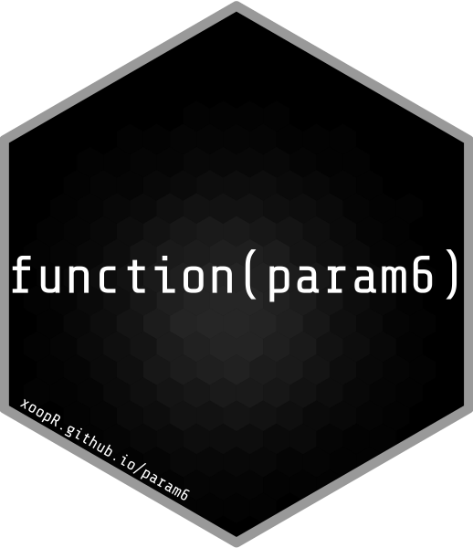

What is param6?
param6 is an R6 parameter set interface for storing multiple parameters that may be used in other R6 (or other paradigm) objects. Key use-cases for R6 parameter sets have been seen in packages such as:
- distr6 - In which R6 distribution objects require parameter sets in order to parametrise a given probability distribution. Parameters as objects allows efficient getting and setting of parameters, as well as composition of distributions.
- mlr3 - In which R6 learners require parameter sets for passing parameters to machine learning models. Storing parameter set objects allows efficient tuning over these parameters.
Main Features
Some main features/key use-cases of param6 includes:
- Construction of parameter sets
prms <- list(
prm(id = "a", support = "reals", value = 1),
prm(id = "b", support = "naturals")
)
ParameterSet$new(prms)- Tagging parameters with properties
prms <- list(
prm(id = "a", support = "reals", value = 1, tags = "t1"),
prm(id = "b", support = "nnaturals", tags = "t2")
)
ParameterSet$new(prms,
list(required = "t1", unique = "t2"))- Getting and setting parameter values
prms <- list(
prm(id = "a", support = "reals", value = 1, tags = "t1"),
prm(id = "b", support = "naturals", tags = "t2")
)
p <- ParameterSet$new(prms)
p$values$b <- 2
p$values
p$get_values(tags = "t1", simplify = FALSE)- Transform parameters
p <- ParameterSet$new(
list(prm(id = "a", support = "naturals", value = 4))
)
p$trafo <- function(x, self) {
x$a <- 2^x$a
x
}
p$get_values("a", simplify = FALSE)- Parameter dependencies
p <- ParameterSet$new(list(
prm(id = "a", support = "naturals"),
prm(id = "b", support = "naturals")
))
p$add_dep("a", "b", cnd("eq", 4))
p$values$b <- 5
p$values$a <- 1 # fails as b != 4
p$values$b <- 4
p$values$a <- 1 # now works
p$get_values()Why param6?
param6 began as the ParameterSet object in distr6. However this initial attempt at an R6 parameter set interface, had massive bottlenecks that were causing substantial problems in dependencies. param6 is an abstracted parameter set interface that draws influence from this initial design. param6 achieves faster run-times and smaller object-sizes than other parameter set packages by making the following design decisions:
-
data.tableobjects are minimised and only used when absolutely necessary, insteadlistobjects are utilised. - Symbolic representation of sets is utilised via the set6 package in order to store sets as characters, thereby reducing object sizes. Additionally, param6 includes a support_dictionary which stores constructed sets that can then be accessed via a string representation, thereby preventing the same set needing to be constructed multiple times.
- Rcpp is utilised via set6 in order to allow very fast containedness checks when checking values lie within a parameter support.
- S3 is embraced for simple objects, such as the prm object in order to increase speed in construction times.
- Parameters are grouped internally by their supports, and not individually, allowing for a further increase in efficiency of both storage and runtimes in containedness checks
- The notion of ‘parameter set collections’ is removed in favour of automated methods for setting and getting prefixes in parameter IDs
Installation
For the latest release on CRAN, install with
install.packages("param6")Otherwise for the latest stable build
remotes::install_github("xoopR/param6")Future Plans
The param6 API is still experimental and may be subject to major changes. To understand if param6 fulfills it’s initial use-case correctly, the next step will be to incorporate the package in distr6, which may involve minor or major changes to the current API. From there, Rcpp will be embraced more fully in set6 and then in param6 to improve package speed.
Package Development and Contributing
param6 is released under the MIT licence. We welcome and appreciate all new issues relating to bug reports, questions and suggestions. You can also start a discussion for more extensive feedback or feature suggestion.